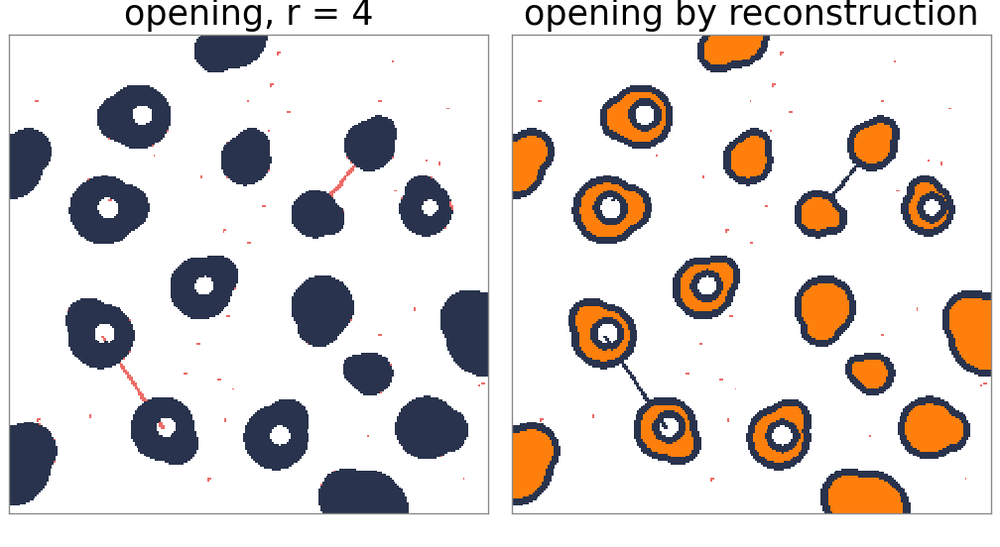
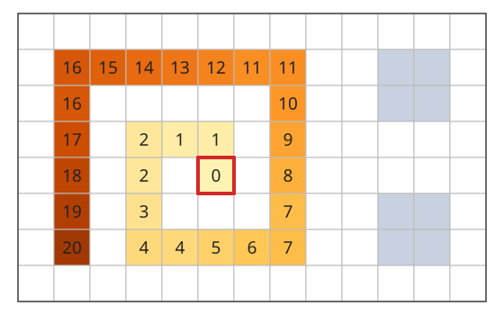
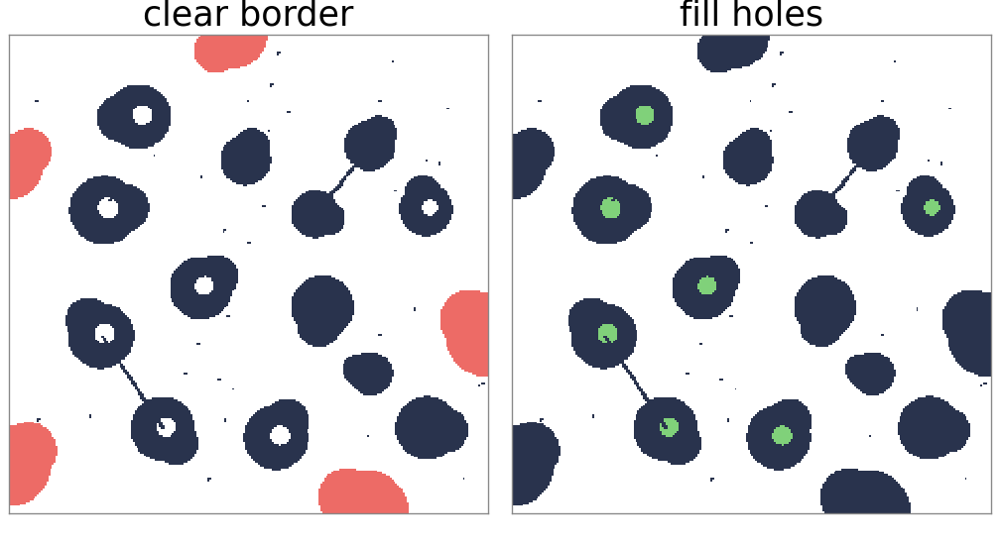
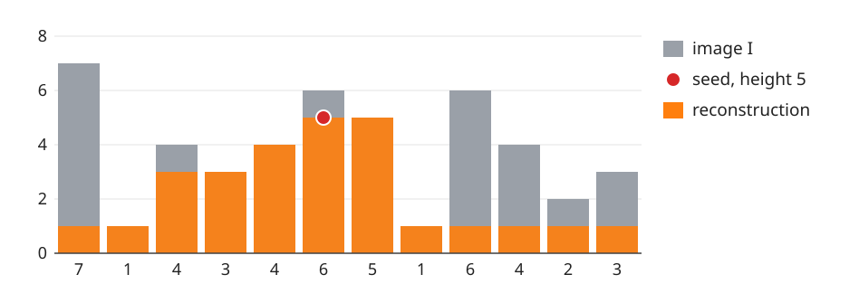
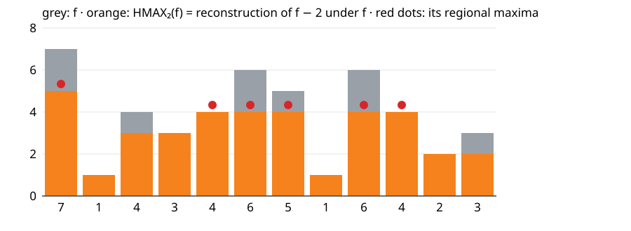
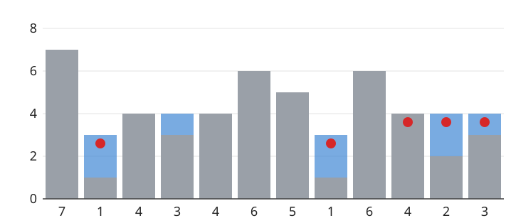
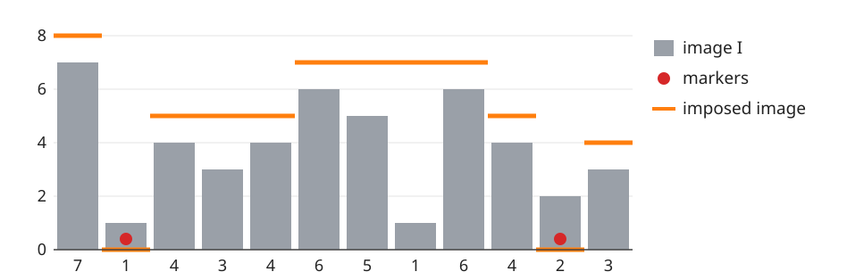

An opening removes small objects, but it also changes the shapes of the ones it keeps: corners, protrusions and thin bridges are cut. Often we want something sharper: keep every object that contains a seed, exactly as it was.
Geodesic dilation: dilate a marker, then clip it to a mask. Repeat until nothing changes: reconstruction (a flood fill from the seeds).
Binary uses: opening by reconstruction, remove objects touching the border, fill holes.
Grey levels: h-maxima and h-minima remove peaks and basins shallower than h; minima imposition forces the minima to chosen markers. These are the tools the watershed day uses.
Slides titled The math give the formulas and proofs; the ideas are complete without them.
The problem with opening
Opening with a disc of radius 4: specks smaller than the disc vanish, as wanted.
But the cells that remain lose their thin bridges and protrusions, and a cell joined to another by a 2-pixel bridge becomes two objects.
What we want instead: decide which objects to keep (those the disc fits into somewhere) and then keep each of them whole.
The trick: use the erosion only to find the objects (as seeds), and then grow the seeds back inside the original mask.

The demo’s mask, disc of radius 4. Red: removed. The opening removes 203 pixels and cuts the bridges; the opening by reconstruction removes 60, only the specks. Orange: the erosion, used as the seeds.
Geodesic dilation and reconstruction
Two images: a markerM (the seeds) and a maskA, with M \subseteq A.
Geodesic dilation: dilate M by the 3 \times 3 square (one step), then intersect with the mask: (M \oplus B) \cap A. The marker grows by one pixel, but only inside A.
Repeat until nothing changes: the reconstructionR_A(M).
Result: every connected component of A that contains a seed, complete and unchanged; every component without a seed, gone. It is a flood fill from the seeds.
The square makes the components 8-connected (the course convention for objects); the cross gives 4-connected ones (used for the background).

One marker pixel (red frame) in a spiral-shaped mask: each pixel is numbered by the step at which the marker reaches it, along paths inside the mask (20 steps). The two blocks on the right have no marker and are never reached (grey).
The math: reconstruction
\delta_A(M) = (M \oplus B) \cap A, \qquad R_A(M) = \delta_A^{(k)}(M) \ \text{ for the first } k \text{ with } \delta_A^{(k+1)}(M) = \delta_A^{(k)}(M).
\delta_A is increasing and M \subseteq \delta_A(M) \subseteq A (when 0 \in B and M \subseteq A), so the iterates grow and stop after at most |A| steps.
After k steps the marker covers exactly the pixels of A within k steps of M along paths insideA (the geodesic distance): hence the name.
Dual: geodesic erosion(M \ominus B) \cup A for M \supseteq A, iterated: reconstruction by erosion R^{\varepsilon}_A(M) (fill from the outside in).
One line for the next day: the connected component of A containing a pixel p is R_A(\{p\}). Labelling all components efficiently is the labelling day.
Three binary tools
Opening by reconstruction: R_A(A \ominus B). The erosion decides which objects survive; the reconstruction gives them back whole.
Clear border (remove objects touching the image edge, which cannot be measured completely): A \setminus R_A(A \cap \text{frame}), with the frame = the outermost row and column of pixels.
Fill holes: a hole is background that cannot be reached from outside the image. Reconstruct the background from the frame, R_{A^c}(A^c \cap \text{frame}) (4-connected), and take the complement.
All three are “seeds + flood fill”, with different seeds and masks.

The demo’s mask. Clear border: 5 objects (4165 pixels) removed (red). Fill holes: 7 holes (556 pixels) added (green).
Try it: reconstruction on a mask
Grey-level reconstruction
Same definition with min and max: marker M \le I pointwise,
Picture the image as a landscape and the marker as a lower landscape inside it. Each step lifts the marker to the highest neighbouring marker value, but never above the image.
A single seed of height v at the top of a hill floods outwards as long as it can stay at or below the landscape; it reaches every point that can be reached without climbing above v, and on the way it is held down by the lowest pass.

The 12-sample signal of this lecture and one seed of height 5 at sample 5 (red). The reconstruction (orange) is 5 next to the seed, 3–4 to the left (held down by the values 3 and 4), and 1 beyond the passes of height 1.
h-maxima: remove the low peaks
Marker = the image lowered by h: M = I - h. Reconstruct:
\mathrm{HMAX}_h(I) = R_I(I - h).
Every peak is lowered by h; a peak that rises at most h above the pass to a higher peak (its dynamic) is flattened completely and merges with its neighbour.
DomesI - \mathrm{HMAX}_h(I): the top h of every peak.
Regional maximum: a plateau whose neighbours are all lower. The regional maxima of \mathrm{HMAX}_h(I) (the “h-maxima”, or extended maxima) mark only the significant peaks: one per nucleus, rather than one per noise bump.
Example: 12 samples, h = 2

The 12-sample signal (grey), its h-maxima transform for h = 2 (orange) and the regional maxima of the result (red dots).
I = 7\,1\,4\,3\,4\,6\,5\,1\,6\,4\,2\,3 has 5 regional maxima (7, 4, 6, 6, 3). After reconstructing I - 2 (3 iterations): 5\,1\,3\,3\,4\,4\,4\,1\,4\,4\,2\,2, with 3 regional maxima. The peaks 4 (sample 2) and 3 (sample 11) rise only 1 above their passes and are gone.
The math: dynamics and h-maxima
The dynamic of a regional maximum: the smallest descent needed to reach a higher point, \mathrm{dyn}(m) = I(m) - \max_{\text{paths } m \to \text{higher point}} \ \min_{\text{path}} I .
I - h \le \mathrm{HMAX}_h(I) \le I: the marker only grows, and never above the mask.
A regional maximum m of I survives as a regional maximum of \mathrm{HMAX}_h(I) exactly when \mathrm{dyn}(m) > h (the global maximum always survives).
h-minima: \mathrm{HMIN}_h(I) = R^{\varepsilon}_I(I + h), reconstruction by erosion. Every basin is filled by h; basins of depth at most h are filled to their spill level and disappear as minima.
h-minima: fill the shallow basins
\mathrm{HMIN}_h(I) = R^{\varepsilon}_I(I + h)
Pour water into every basin up to h above its bottom; a basin that overflows at less than h merges with its neighbour.
The 12-sample signal with h = 2: 4 regional minima (1, 3, 1, 2) become 3; the basin at sample 3 (bottom 3, spill level 4) is filled.
This is how the watershed day chooses its markers: flood only from the minima of \mathrm{HMIN}_h, so that noise basins do not each become a region.

The 12-sample signal (grey) with water (blue) from the h-minima transform, h = 2: 7\,3\,4\,4\,4\,6\,5\,3\,6\,4\,4\,4. Red: its 3 regional minima.
Try it: reconstruction in 1D
Minima imposition
The watershed (day 10) floods from every regional minimum. To flood from chosen markers only (one per cell), change the image so that its only minima are the markers, keeping its shape elsewhere:
M = 0 on the markers, very high elsewhere (above \max I).
Reconstruct by erosion of M above \min(I + 1, M): every basin without a marker fills up to its spill level; the markers stay at 0.
Result: a landscape with exactly one minimum per marker run, and the same passes (dams) as I between them. “Marker-controlled watershed” = watershed of this imposed image.

The 12-sample signal (4 regional minima) with markers at samples 1 and 10 (red). The imposed image (orange) 8\,0\,5\,5\,5\,7\,7\,7\,7\,5\,0\,4 has minima only at the two markers.
The math: why imposition works
Let G = \min(I + 1, M): G = 0 on markers, I + 1 elsewhere. The result J = R^{\varepsilon}_G(M) satisfies G \le J \le M.
On a marker: J = G = 0, the lowest possible value, so markers are minima.
Elsewhere J \ge I + 1 > 0. Reconstruction by erosion gives J(x) = \max\big(G(x), \min_{\text{paths } x \to \text{marker}} \max_{\text{path}} G\big): the lowest possible “highest point” on the way to a marker. Take a plateau of J at height v > 0 and the best path from one of its pixels to a marker: J \le v along the whole path, and it ends at 0, so it leaves the plateau through a neighbour with J < v. The plateau is not a regional minimum.
The “+1” keeps the markers strictly lower than everything else even where I is already at its minimum.
A fast algorithm
Iterating geodesic dilations until stable is the definition, but slow: every iteration visits every pixel, and a flood across a large object takes hundreds of iterations (131 for the background of the demo mask).
Vincent (1993): one raster and one anti-raster pass (as in the two-pass distance transform), then a first-in-first-out queue of the pixels that can still propagate. Only pixels on the moving front are revisited.
Binary reconstruction = a breadth-first flood fill: each pixel enters the queue once. Linear time.
The watershed day uses the same queue idea, with priorities (a priority queue ordered by grey level).
Try it: h-maxima on nuclei
Summary
ReconstructionR_A(M): dilate the marker step by step, clipped to the mask, until stable; a flood fill that keeps every marked component whole.
Binary: opening by reconstruction (filter by size, keep shapes), clear border, fill holes; the component of a pixel is its reconstruction (labelling day).
Grey: \mathrm{HMAX}_h = R_I(I - h) removes peaks of dynamic \le h; h-minimaR^\varepsilon_I(I + h) fill basins of depth \le h; regional extrema of the result are robust markers.
Minima imposition makes chosen markers the only minima, for the marker-controlled watershed (day 10).
Fast: a FIFO queue processes only the moving front.